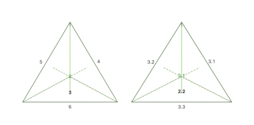

Das Konzept der (i) Kreation aus dem (ii) Nichts (creatio ex nihilo) impliziert, aus der Perspektive vorliegender Empirie1, strenggenommen die Annahme einer virtuellen Struktur (VR) der vorliegenden Empirie, welcher eine nicht fassbare, jedoch wissentlich und willentlich agierende und kreierende reale Welt (R) kausal zugrunde liegt, wie auch in den Phænomena des Aratus angedeutet:
"MVndus est compages ex cælo, terráq;, & iis naturis coagmentata quæ vtroque continentur. Cœlum est id quod omnia, quæ sunt, præter [...] ", (Petavius, 1630, p. 261).
Die Welt ist ein Gefüge aus Himmel und Erde, verbunden durch die in beiden enthaltenen Naturen. Das Universum ist das, was alle Dinge, außer [...], sind.
Man unterlässt auch hier legitimerweise weitere Beschreibungen der nichtfassbaren Realität R und legt ausschließlich die Entwicklungs- und Kreations-Phänomene in der virtuellen Struktur VR, der vorliegenden Empirie dar:
" [...] iis, quæ in sublimi cernuntur.", (Petavius, 1630, p. 261).
[...] jene Dinge, die im Erhabenen gesehen werden.
Die grundlegende Erklärung liegt somit auf der Hand, da ein, wie auch immer geartetes (i) Sein, unabdingbar und zwangsläufig ist, denn rein formal ausgedrückt muss ein vollständiges Nichts klarerweise auch sein, ansonsten hätte man ein nicht Nichts und damit ohnedies irgendein basales Sein.
Der Ursprung selbst, das Nichts, in dieser Analogie ist in der (ii) linearen Zeit t={}, in der gemeinsamen Zeitcharakteristik von R und VR, oder dem gemeinsamen Timing zu erkennen, was in concreto am Dritten Tag sehr deutlich in den Ausführungen über die Gewässer, mit Quellen (R) {und} Seen (VR) dargestellt wird.
Dabei ist zu beachten, dass der Zweite und Erste Tag, Ordnung und Kreation in R stattfindend, in VR ab Tag Drei, der Gestaltung und weiter Zirde nur indirekt quasi als logisches Vorgängerbild rekursiv erkannt werden. Weitergeführt wird diese Darstellung somit rückwirkend im Vorwort:
"quam pleni [et] [con]summati boni fons i[n] ip[s]o erat: vt ab eo bono tam[que]m riu[us] ordieret[ur].", (Schedel, 1493, fol. 2r).
In ihm selbst war der Quell vollkommener und vollbrachter Güte, damit daraus Gutes gleich einem Strom hervorgebracht wird.
Weiter im Ersten Tag:
"Gl[or]iosus [...] de[us]. q[ui] e[st] vera lux [...] ", (Schedel, 1493, fol. 2v).
[...] der glorreiche Gott, der das wahre Licht ist [...].
Schließlich im Ersten Zeitalter der Welt:
"SUmma bonitas volens co[m]mu[n]icare suum bonu[m] [et] alijs [...]", (Schedel, 1493, fol. 6v; vgl. Petrus, 1484, Sententiarum, II.4.).
Die höchste Güte will diese Güte auch anderen mitteilen [...]
Im Zusammenhang mit dem Diapason, der universellen Harmonie innerhalb der Astralebene (vgl. Rackham, 1967, S. 227 ff.), d. h. Pythagoras' Lehre von der Musica universalis (vgl. Plinius Secundus, 1250, Fol. 22r), siehe die schematische Darstellung der Illustrationen vom Ersten Tag bis zum Vierten Tag, wobei ein weißer Kreis einen Ton und ein weißer Kreis zusammen mit einem roten Kreis einen Halbton darstellt (vgl. NC_tab_astro01).
Die Grundannahme einer virtuellen Struktur VR der Empirie wird auch in den Ausführungen zu den Größenordnungen im Almagest von Ptolemæus nur allzu deutlich:
"MAius quo scitur q[ue] terra s[ecundu]m sensum qua[n]tu[m] ad spaciu[m] q[uo]d peruenit a centro totius ad orbe[m] stellaru[m] fixaru[m] sit sicut punctum [...] ", (Ptolemæus, 1515, fol. 4r).
" […] die Erde hat […] das Verhältnis eines (mathematischen) Punktes zur Entfernung der […] Fixsterne […]", (vgl. Toomer, 1984, p. 43).
Wird angenommen, die Erde und damit die vorliegender Empirie sind virtuell VR, dann ergäbe sich dafür, betrachtet von außen im Gesamtbild (R) lediglich eine logische Koordinatenstelle, der mathematische Punkt. Dergestalt entfaltete sich ein zwar virtuelles, dennoch geometrisch konsistentes Bild von innen und ergäbe notwendigerweise übergrosse Dimensionen des umgebenden Sternenhimmels in Relation.
Die klaren Annahmen der Beschreibungen zur Kreation (aus R) werden am Modell des Tetraeders, der grundlegendsten räumlichen geometrischen Figur, einem räumlichen Viereck, am aller deutlichsten erkannt, vgl. Abb 1.
"Creatio re[rum] senario numero explicatur. Cuius partes. unu[m]: duo: tria sunt. que in trigonu[m] surga[n]t.", (Schedel, 1493, fol. 2r; vgl. Mirandola & Mirandola, 1601, Heptaplus).
Dadurch [...] drückt sich die Schöpfung in der Sechserzahl aus, deren Bestandteile 1, 2 und 3 sind, welche sich zu einem Dreieck erheben.
Abbildung 1. Tage und Teile der Kreation im Tetraeder dargestellt.

Die angenommene reale Welt R (ipse deus!) lässt sich auch unschwer im Konstrukt des Celum Trinitatis bzw. Celum Empireum finden:
"[...] celum trinitatis ipse deus qui est in omnibus [et] super om[n]ia.", (Schedel, 1493, fol. 6r).
[...] der Himmel der Dreifaltigkeit, Gott selbst, der unter allen Dinge und jenseits aller Dinge ist.
Hier am Andern Tag als Existenz einer zehnten Sphäre (des Empyreums oder der unbeweglichen ersten Intelligenz) jenseits der traditionellen neun Sphären, erörtert:
"Supra nouem celorum orbes [...] creditum est decimum celum fixum manens [et] quietum: quod motu nullo participet. [...] hic ysaac decimu[m] orbem ab Ezechiele designatum intelligit per zaphiru[m] in similitudine[m] throni", (Schedel, 1493, fol. 3r; vgl. Mirandola & Mirandola, 1601, Heptaplus, II.1).
Über den 9 Himmelsorben [...] nimmt man an, dass der zehnte Himmel unveränderlich, ruhend und still ist, da dieser an keiner Bewegung teilnimmt [...]. Hier interpretiert Isaak den zehnten Orbit als von Hesekiel durch den Saphir in Gestalt eines Thrones bezeichnet [...].
Vgl. dazu Hesekiel 1,4 und 1,26-28, s. Jiménez de Cisneros (1517, fol. vijr ff.), Berry (1939), Idel (1977, p. 291) und Bergren (2017).
Weiteres findet man in den Psalmen durch die Civitas in quadro posita Hinweise auf das räumliche(!) Viereck, vgl. NC_tab_cmp:
" [...] les Théologiens placent [...] un XII. CIEL, qui est immobile, & qui pour cet efet est nommé dans l'Apocalypse: Civitas in quadro posita, Cap.XXI. v.16. une Ville batie en quarré: [...] pour désigner sa fermeté & son état de consistence éternelle. [...] Pseaume XXXV.", (De Vallemont, 1707, p. 54).
[...] die Theologen setzen [...] einen Himmel, der unbeweglich ist und deshalb in der Offenbarung so genannt wird: Civitas in quadro posita, Kap. XXI, 16. Eine Stadt, die auf einem Quadrat erbaut ist: [...] um ihre Festigkeit und ihren Zustand ewiger Beständigkeit zu bezeichnen. [...] Psalm XXXV.
Siehe hierzu ferner am Ersten Tag die Ausführungen zur Erschaffung der (i) vier Himmelsrichtungen, am Andern Tag die Erläuterung der (ii) Achsen der Sphäre des Himmels, sowie am siebenten Tag die Darstellung der (iii) vier Windgötter, der Anemoi, s. Tab_fol_5v (vgl. von Raumer, 1837 und Thompson, 1918).
Inwieweit die geometrischen Modellannahmen auch weiter zu generalisieren sind, wäre zu überlegen.
1: Die gesamte, sowohl direkt als auch indirekt erfahrbare Welt.
Bergren, T. (2017). Plato’s "Myth of Er" and Ezekiel’s "Throne Vision": A Common Paradigm? Numen, 64(2/3), 153–82. http://www.jstor.org/stable/44505333
Berry, G. R. (1939). The Composition of the Book of Ezekiel. Journal of Biblical Literature, 58(2), 163–75. http://www.jstor.org/stable/3259859
De Vallemont, P. (1707). La Sphère Du Monde: Selon l’Hypothèse De Copernic, Présentée Au Roy: Décrite, démontrée, & comparée avec les Sphères & les Systèmes de Ptolomée, & et de Tyco-Brahé. A Paris: Chez Prosper Marchand. https://www.digitale-sammlungen.de/de/view/bsb10061168?page=5
Idel, M. (1977). The Throne and the Seven-Branched Candlestick: Pico Della Mirandola’s Hebrew Source. Journal of the Warburg and Courtauld Institutes, 40, 290–92. http://www.jstor.org/stable/751003
Jiménez de Cisneros, F. (1517). Biblia Polyglotta Complutensis. Complutum: Arnaldo Guillén de Brocar. https://doi.org/10.3931/e-rara-46695
Mirandola, G., & Mirandola, G. F. (1601). Ioannis Pici, Mirandulae ... opera quae extant omnia ... Basileae: per Sebastianum Henricpetri. https://doi.org/10.3931/e-rara-61217
Petavius, D. (1630). VRANOLOGION sive systema variorvm authorvm. qvi de sphaera, ac sideribvs, eorvmove motibvs Graece commentati sunt. LVTETIAE PARISIORVM: Sumptibus Sebastiani Cramoisy, via Iacobaea, sub Ciconiis. M. DC. XXX. CVM PRIVILEGIO REGIS CHRISTIANISS. https://doi.org/10.3931/e-rara-2004
Petrus. (1484). Sententiarum Libri IV. Basel. https://doi.org/10.3931/e-rara-18241
Plinius Secundus, G. (1250). Plinius Secundus Major, Historia Naturalis. Liber Trigesimus Septimus Manu Recentiore Suppletus Est. Latin 6797. Paris: Bibliothèque nationale de France. https://gallica.bnf.fr/ark:/12148/btv1b550140045/
Ptolemaeus, C. (1515). Almagestum CL. Ptolemei Pheludiensis Alexandrini astronomorum principis: Opus ingens ac nobile omnes Caelorum motus continens. Felicibus astris eat in lucem: Ductu Petri Liechtenstein Coloniensis Germani. Anno Virginei Partus, 1515, Die 10. Ia. Venetiis ex officina eiusdem litteraria. (Almagest of CL. Ptolemy Pheludiens, head of the Alexandrian astronomers: A great and noble work containing all the movements of the heavens...) https://doi.org/10.3931/e-rara-206
Rackham, H. (1967). Pliny Natural History in Ten Volumes. Vol. 1. Cambridge, Massachusetts: Harvard University Press. https://archive.org/details/naturalhistory01plinuoft/
Schedel, H. (1493). Liber chronicarum cum figuris et ymagibus ab inicio mundi. Nuremberge: Antonius Koberger. https://daten.digitale-sammlungen.de/~db/0003/bsb00034024/images/index.html?id=00034024
Thompson, D. W. (1918). The Greek Winds. The Classical Review, 32(3/4), 49–56. http://www.jstor.org/stable/697189
Toomer, G. J. (1984). Ptolemy's Almagest. Duckworth, London & Springer, New York. https://doi.org/10.2307/631776
von Raumer, K. (1837). Die Windrose der Griechen und Römer. Rheinisches Museum Für Philologie, 5, 497–521. http://www.jstor.org/stable/41247444
The_Nuremberg_Chronicle_1493_Sources
Dietmar Gerald Schrausser27.05.2026